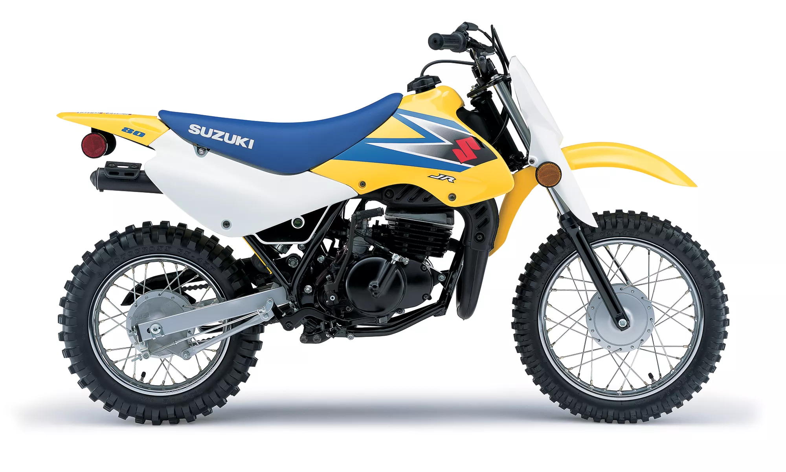

Suzuki JR80, the bike designed for young riders, in the 7-10 age group, who have gone beyond their ‘first’ bike. The 2-stroke engine has more than enough power to satisfy, and the 5-speed transmission helps put the power smoothly to the ground. Whether trail riding or playing at your favourite holiday spot, the JR80’s easy maintenance and reliability ensure young riders have lots of hours riding without worry.
